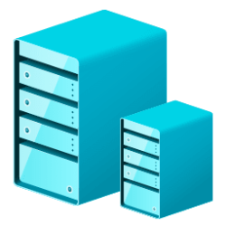
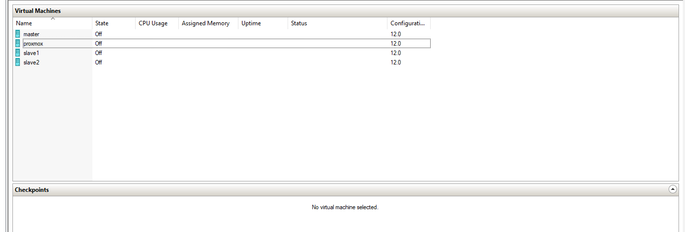
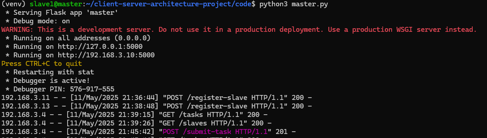

Rapport pde Projet
3ème année
Ingénierie Informatique et Réseaux
Sous le thème :
Virtualisation d'un service de Load Balancer en architecture client-serveur
Réalisé par :
Majjid Ayoub
Encadré par :
Tuteur de l'école : Mostapha Zbakh
Je dédie ce travail à ma famille, pour leur soutien inconditionnel, leur amour et leurs encouragements constants. Leur présence a été ma force tout au long de ce parcours académique. À mes parents, qui ont toujours cru en moi et m'ont poussé à poursuivre mes rêves, je vous suis infiniment reconnaissant.
À mes amis et collègues, qui ont partagé les hauts et les bas de cette aventure, merci pour votre amitié et votre soutien. Vos encouragements ont rendu ce projet plus enrichissant.
Enfin, à mes professeurs et mentors, dont les conseils et l'expertise ont guidé mes pas, je vous exprime ma profonde gratitude. Ce travail est le fruit de vos enseignements et de votre confiance.
Nous tenons à exprimer notre gratitude à toutes les personnes qui ont contribué à la réalisation de ce projet.
Merci à tous pour votre aide précieuse.
Introduction :
Ce projet a pour objectif de concevoir un service de Load Balancer distribué pour une calculatrice en architecture client-serveur. Il implique la virtualisation de machines Ubuntu sous Hyper-V, la configuration réseau, et le développement d'APIs Flask pour la communication entre les nœuds.
Contexte :
Les architectures distribuées sont essentielles pour optimiser les performances et la disponibilité des services. Ce projet explore la répartition de charge entre un master et des slaves pour le calcul d'expressions mathématiques.
Objectifs :
Résultats :
Le projet a abouti à une plateforme fonctionnelle où le master répartit les tâches de calcul entre les slaves. Les tests confirment la robustesse et l'efficacité du système.
Perspectives :
Améliorer la sécurité, ajouter des fonctionnalités de monitoring, et étendre le système à un plus grand nombre de slaves.
Introduction:
This project aims to develop a distributed Load Balancer service for a client-server calculator. It involves virtualization of Ubuntu machines under Hyper-V, network configuration, and Flask APIs for node communication.
Context:
Distributed architectures are key to optimizing performance and service availability. This project explores load balancing between a master and slaves for mathematical computations.
Objectives:
Results:
The project resulted in a functional platform where the master distributes tasks to slaves. Tests confirm system robustness and efficiency.
Future Work:
Enhance security, add monitoring features, and scale the system to more slaves.
L'évolution des architectures distribuées a révolutionné la gestion des ressources informatiques. Ce projet explore la virtualisation et la répartition de charge à travers un service de calcul distribué.
Problématique :
Comment concevoir un système scalable et efficace pour répartir des tâches de calcul entre plusieurs nœuds ?
Organisation du Mémoire :

Figure 1 : Logo de Microsoft Hyper-V
Solution de virtualisation utilisée pour créer les machines virtuelles master et slaves.

Figure 2 : Logo d'Ubuntu Server
Système d'exploitation choisi pour sa stabilité et son support des outils open-source.

Figure 3 : Framework Flask pour les APIs
Framework Python léger idéal pour le développement des microservices.

Figure 4 : Interface Postman pour les tests API
Outil indispensable pour valider les endpoints et documenter les APIs.
f
Le format JSON est utilisé pour envoyer et recevoir des informations entre les différents composants de l'architecture. Les requêtes envoyées au "master" contiennent des données sous forme de JSON qui spécifient les tâches à effectuer. Chaque tâche contient un identifiant unique, des informations sur l'opération à réaliser, ainsi que les données nécessaires pour effectuer le calcul.
{
"task_id": "12345",
"payload": {
"operation": "addition",
"operands": [5, 3]
}
}
{
"task_id": "12345",
"result": 8,
"status": "completed"
}
slave) :{
"id": "slave-a1b2c3d4",
"webhook": "http://192.168.3.12:5000",
"status": "free"
}
id : Identifiant unique de l’esclave (UUID court).webhook : URL du point d’accès HTTP pour le traitement.status : Statut actuel de l’esclave (free ou busy)./submit-task : Soumission des expressions./register-slave : Enregistrement des slaves.Master : Interface de gestion des tâches.
Slaves : Logs des calculs.

Voici la documentation complète pour configurer votre projet de calculateur distribué Flask en utilisant un environnement virtuel Python (venv). Ce guide vous accompagne dans l’installation des dépendances, la configuration des environnements virtuels, l'exécution des services master et slaves, ainsi que les tests du système.
distributed_calculator/
├── master.py
├── slave.py
├── utils.py
├── run_slaves.py
├── requirements.txt
└── README.md
Linux/MacOS :
python3 -m venv venv
source venv/bin/activate
Windows (CMD) :
python -m venv venv
venv\Scripts\activate
Créer un fichier requirements.txt :
flask
requests
Puis exécuter :
pip install -r requirements.txt
python master.py

Le serveur master est disponible à l’adresse http://localhost:5000.
Chaque slave doit fonctionner sur un port différent. Utilisez des onglets ou de nouvelles fenêtres de terminal.
Exemple pour démarrer le Slave 1 (port 6000) :
python slave.py slave-1
Exemple pour Slave 2 (port 6001) :
WEBHOOK_PORT à 6001 dans slave.py ou le passer en argument.Le slave s’enregistre automatiquement auprès du master via
http://<ip-master>:5000.
Utiliser Postman ou curl :
curl -X POST http://localhost:5000/submit-task \
-H "Content-Type: application/json" \
-d '{"payload": "4 * (2 + 3)"}'
Lorsque vous avez terminé :
deactivate
Vous pouvez dupliquer slave.py ou ajouter un paramètre CLI pour ajuster dynamiquement le port et l’ID du slave. Exemple :
python slave.py slave-2 6001
Et dans slave.py, modifiez comme suit :
SLAVE_ID = sys.argv[1]
WEBHOOK_PORT = int(sys.argv[2])